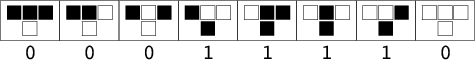
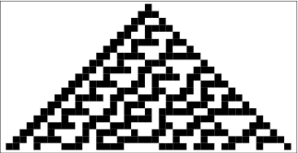

The simplest cellular automaton is one-dimensional. The construction rules of a one-dimensional cellular automaton are based on the current state of a cell and its neighboring cells, where the neighbors are the cells to its right and to its left.
 |
| One-dimensional rule 30. |
Since there are 2 x 2 x 2 = 2^3 = 8 possible binary states for the three cells neighboring a given cell, there are a total of 2^8 = 256 one-dimensional cellular automata, each of which can be indexed with an 8-bit binary number (Wolfram 1983, 2002). For example, the table giving the evolution of rule 30 (30 = 00011110_2) is illustrated above.
 |
| Evolution of rule 30. |
The evolution of a one-dimensional cellular automaton can be illustrated by starting with the initial state (generation zero) in the first row, the first generation on the second row, and so on. For example, the figure above illustrated the first 20 generations of the rule 30 elementary cellular automaton starting with a single black cell.